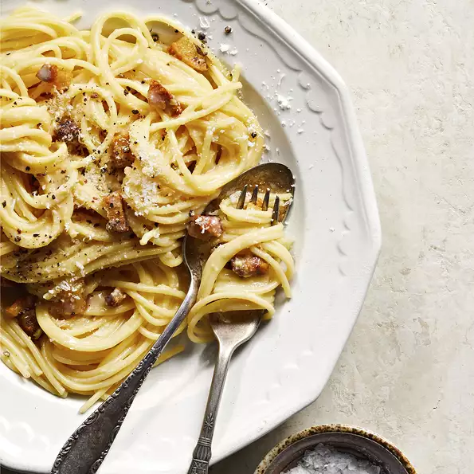

Carbonara

Description
a dish of hot pasta into which other ingredients (such as eggs, bacon or ham, and grated cheese) have been mixed —often used as a postpositive modifier spaghetti carbonara.
Ingredients
- 1 (8 ounce) package linguine pasta
- 1 cup frozen peas
- 5 slices bacon
- 1 clove garlic, minced
- 1 cup milk
- 1/2 (8 ounce) package creame cheese
- 1/4 cup grated Parmesan cheese
Steps
- Bring a large pot of lightly salted water to a boil. Cook linguine at a boil until tender yet firm to the bite, about 11 minutes, adding peas in the last minute of cooking. Drain and keep warm in a bowl.
- Place bacon in a large skillet and cook over medium-high heat, turning occasionally, until evenly browned, about 10 minutes. Transfer bacon to paper towels, reserving 1 tablespoon of drippings in the skillet.
- Add garlic to the skillet; saute for 1 minute. Reduce heat to low and stir in milk and cream cheese until blended.
- Crumble bacon and add to the linguine along with sauce and Parmesan cheese; stir to coat.